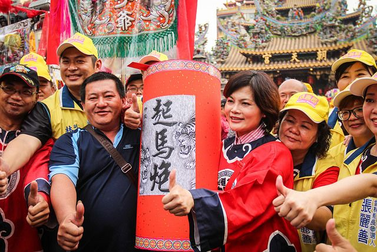

三月十九？我想一定會有人問，為什麼北港迎媽祖活動會是在農曆三月十九、二十，而不是三月二十三媽祖誕辰當天呢？
早期朝天宮會都在媽祖生日前夕回到湄州祖廟謁祖進香，而當回到北港時，時間就是在農曆三月十九， 所以也就會在這一天於境內出巡祈福！原本一天的繞境活動也於民國四十四年擴大至兩天！
2008年，北港迎媽祖的活動也被指定為「台灣文化資產」， 並與台東炸寒單、鹽水蜂炮並稱為「台灣三大炮」。2011年受中華民國行政院文建會指定為國家重要民俗。


一般神明出巡，大都走大路大街為主，而北港媽祖卻是大街小巷都走，只要那條巷子神轎進的去、走的出來，再小的巷子媽祖的隊伍都會進去走走繞繞，當看到神轎進去只能剛好容納轎子寬度的巷子時，心中真有著莫名的感動，看到朝向媽祖神轎跪拜的信徒，那種濃濃的神與人的情感與寄託，更是可以發現北港媽祖對於當地人的重要性。



三月瘋媽祖如果你想知道這是什麼感覺，那你就來看看北港媽祖出巡繞境就知道，因為北港人對媽祖的熱情真的會讓你永生難忘！北港人會用吃炮來表示對媽祖的崇敬之意。吃炮那是個怎麼個吃法？依據北港當地陣頭的習慣最主要會分成三種方式 犁炮、踩炮、炸轎。
犁炮是北港最據有獨特性的一種施放鞭炮方式，其顧名思義就是用犁頭鐵質部搭配火爐，當火爐中的木炭將犁頭燒紅時，就可以用來點燃手中的排炮並在點燃的第一時間丟向神轎的放炮方式，稱為犁炮。近期幾年在金垂髫鄉土文史協會的推廣之下，慢慢的又回復成使用犁頭生搭配火爐的古早式，在媽祖繞境的這幾天，協會也會在媽祖廟廣場前示範犁炮，而現場民眾也都有機會可以參與犁炮的活動喔！


繞境隊伍中，你不但可以看到具有歷史的傳統陣頭，還可以看到各式的藝閣花車，每個藝閣都會有個主題故事，而藝閣上也有著很小朋友扮演故事中的角色，那都是真人，可不是電動人偶！
觀賞藝閣時，你只要對這些小朋友招招手，他們就會丟糖果給你！北港的真人藝閣在台灣已經很少見了。
北港的百年陣頭中，其實有很多都是即將失傳的民俗藝陣，甚至有些已經解散。身為一個北港人，我想應該讓更多人看到屬於臺灣特有的本土民俗文化，歡迎大家將北港這一份特色分享出去吧！